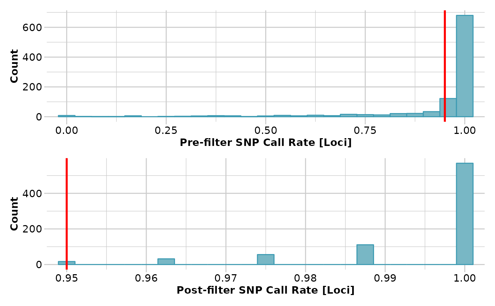
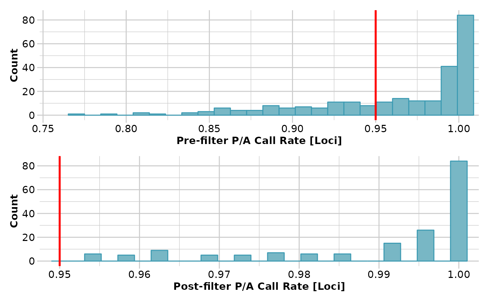

Imputates missing data
gl.impute.RdThis function imputes genotypes on a population-by-population basis, where populations can be considered panmictic, or imputes the state for presence-absence data.
Arguments
- x
Name of the genlight object containing the SNP or presence-absence data [required].
- method
Imputation method, either "frequency" or "HW" or "neighbour" or "random" [default "HW"].
- fill.residual
Should any residual missing values remaining after imputation be set to 0, 1, 2 at random, taking into account global allele frequencies at the particular locus [default TRUE].
- parallel
A logical indicating whether multiple cores -if available- should be used for the computations (TRUE), or not (FALSE); requires the package parallel to be installed [default FALSE].
- verbose
Verbosity: 0, silent or fatal errors; 1, begin and end; 2, progress log ; 3, progress and results summary; 5, full report [default 2 or as specified using gl.set.verbosity].
Details
We recommend that imputation be performed on sampling locations, before any aggregation. Imputation is achieved by replacing missing values using either of two methods:
If "frequency", genotypes scored as missing at a locus in an individual are imputed using the average allele frequencies at that locus in the population from which the individual was drawn.
If "HW", genotypes scored as missing at a locus in an individual are imputed by sampling at random assuming Hardy-Weinberg equilibrium. Applies only to genotype data.
If "neighbour", substitute the missing values for the focal individual with the values taken from the nearest neighbour. Repeat with next nearest and so on until all missing values are replaced.
if "random", missing data are substituted by random values (0, 1 or 2).
The nearest neighbour is the one with the smallest Euclidean distance in all the dataset.
The advantage of this approach is that it works regardless of how many individuals are in the population to which the focal individual belongs, and the displacement of the individual is haphazard as opposed to:
(a) Drawing the individual toward the population centroid (HW and Frequency).
(b) Drawing the individual toward the global centroid (glPCA).
Note that loci that are missing for all individuals in a population are not
imputed with method 'frequency' or 'HW'. Consider using the function
gl.filter.allna with by.pop=TRUE to remove them first.
Author
Custodian: Luis Mijangos (Post to https://groups.google.com/d/forum/dartr)
Examples
# \donttest{
require("dartR.data")
# SNP genotype data
gl <- gl.filter.callrate(platypus.gl,threshold=0.95)
#> Starting gl.filter.callrate
#> Processing genlight object with SNP data
#> Warning: data include loci that are scored NA across all individuals.
#> Consider filtering using gl <- gl.filter.allna(gl)
#> Warning: Data may include monomorphic loci in call rate
#> calculations for filtering
#> Recalculating Call Rate
#> Removing loci based on Call Rate, threshold = 0.95
#>

#> Completed: gl.filter.callrate
#>
gl <- gl.filter.allna(gl)
#> Starting gl.filter.allna
#> Processing genlight object with SNP data
#> Identifying and removing loci and individuals scored all
#> missing (NA)
#> Deleting loci that are scored as all missing (NA)
#> Deleting individuals that are scored as all missing (NA)
#> Completed: gl.filter.allna
#>
gl <- gl.impute(gl,method="neighbour")
#> Starting gl.impute
#> Processing genlight object with SNP data
#> Imputation based on drawing from the nearest neighbour
#> No more individuals left to impute individual 1
#> No more individuals left to impute individual 2
#> No more individuals left to impute individual 3
#> No more individuals left to impute individual 4
#> No more individuals left to impute individual 6
#> No more individuals left to impute individual 7
#> No more individuals left to impute individual 8
#> No more individuals left to impute individual 9
#> No more individuals left to impute individual 10
#> No more individuals left to impute individual 11
#> No more individuals left to impute individual 12
#> No more individuals left to impute individual 13
#> No more individuals left to impute individual 14
#> No more individuals left to impute individual 15
#> No more individuals left to impute individual 16
#> No more individuals left to impute individual 17
#> No more individuals left to impute individual 18
#> No more individuals left to impute individual 19
#> No more individuals left to impute individual 20
#> No more individuals left to impute individual 21
#> No more individuals left to impute individual 22
#> No more individuals left to impute individual 23
#> No more individuals left to impute individual 25
#> No more individuals left to impute individual 26
#> No more individuals left to impute individual 27
#> No more individuals left to impute individual 28
#> No more individuals left to impute individual 29
#> No more individuals left to impute individual 30
#> No more individuals left to impute individual 31
#> No more individuals left to impute individual 32
#> No more individuals left to impute individual 33
#> No more individuals left to impute individual 34
#> No more individuals left to impute individual 35
#> No more individuals left to impute individual 36
#> No more individuals left to impute individual 37
#> No more individuals left to impute individual 38
#> No more individuals left to impute individual 39
#> No more individuals left to impute individual 40
#> No more individuals left to impute individual 41
#> No more individuals left to impute individual 42
#> No more individuals left to impute individual 43
#> No more individuals left to impute individual 44
#> No more individuals left to impute individual 45
#> No more individuals left to impute individual 46
#> No more individuals left to impute individual 47
#> No more individuals left to impute individual 48
#> No more individuals left to impute individual 49
#> No more individuals left to impute individual 50
#> No more individuals left to impute individual 51
#> No more individuals left to impute individual 52
#> No more individuals left to impute individual 53
#> No more individuals left to impute individual 54
#> No more individuals left to impute individual 55
#> No more individuals left to impute individual 56
#> No more individuals left to impute individual 57
#> No more individuals left to impute individual 58
#> No more individuals left to impute individual 59
#> No more individuals left to impute individual 60
#> No more individuals left to impute individual 61
#> No more individuals left to impute individual 62
#> No more individuals left to impute individual 63
#> No more individuals left to impute individual 64
#> No more individuals left to impute individual 65
#> No more individuals left to impute individual 66
#> No more individuals left to impute individual 67
#> No more individuals left to impute individual 68
#> No more individuals left to impute individual 69
#> No more individuals left to impute individual 70
#> No more individuals left to impute individual 71
#> No more individuals left to impute individual 72
#> No more individuals left to impute individual 73
#> No more individuals left to impute individual 74
#> No more individuals left to impute individual 75
#> No more individuals left to impute individual 77
#> No more individuals left to impute individual 79
#> No more individuals left to impute individual 80
#> No more individuals left to impute individual 81
#> Residual missing values were filled randomly drawing from the global allele profiles by locus
#> Completed: gl.impute
#>
# Sequence Tag presence-absence data
gs <- gl.filter.callrate(testset.gs,threshold=0.95)
#> Starting gl.filter.callrate
#> Processing genlight object with Presence/Absence (SilicoDArT) data
#> Recalculating Call Rate
#> Removing loci based on Call Rate, threshold = 0.95
#>

#> Completed: gl.filter.callrate
#>
gl <- gl.filter.allna(gl)
#> Starting gl.filter.allna
#> Processing genlight object with SNP data
#> Identifying and removing loci and individuals scored all
#> missing (NA)
#> Deleting loci that are scored as all missing (NA)
#> Deleting individuals that are scored as all missing (NA)
#> Completed: gl.filter.allna
#>
gs <- gl.impute(gs, method="neighbour")
#> Starting gl.impute
#> Processing genlight object with Presence/Absence (SilicoDArT) data
#> Imputation based on drawing from the nearest neighbour
#> No more individuals left to impute individual 1
#> No more individuals left to impute individual 3
#> No more individuals left to impute individual 4
#> No more individuals left to impute individual 5
#> No more individuals left to impute individual 6
#> No more individuals left to impute individual 7
#> No more individuals left to impute individual 8
#> No more individuals left to impute individual 9
#> No more individuals left to impute individual 10
#> No more individuals left to impute individual 14
#> No more individuals left to impute individual 17
#> No more individuals left to impute individual 20
#> No more individuals left to impute individual 21
#> No more individuals left to impute individual 26
#> No more individuals left to impute individual 27
#> No more individuals left to impute individual 29
#> No more individuals left to impute individual 30
#> No more individuals left to impute individual 32
#> No more individuals left to impute individual 34
#> No more individuals left to impute individual 35
#> No more individuals left to impute individual 36
#> No more individuals left to impute individual 37
#> No more individuals left to impute individual 38
#> No more individuals left to impute individual 39
#> No more individuals left to impute individual 43
#> No more individuals left to impute individual 44
#> No more individuals left to impute individual 45
#> No more individuals left to impute individual 46
#> No more individuals left to impute individual 47
#> No more individuals left to impute individual 53
#> No more individuals left to impute individual 54
#> No more individuals left to impute individual 55
#> No more individuals left to impute individual 56
#> No more individuals left to impute individual 58
#> No more individuals left to impute individual 59
#> No more individuals left to impute individual 62
#> No more individuals left to impute individual 64
#> No more individuals left to impute individual 67
#> No more individuals left to impute individual 68
#> No more individuals left to impute individual 70
#> No more individuals left to impute individual 71
#> No more individuals left to impute individual 74
#> No more individuals left to impute individual 76
#> No more individuals left to impute individual 78
#> No more individuals left to impute individual 79
#> No more individuals left to impute individual 80
#> No more individuals left to impute individual 81
#> No more individuals left to impute individual 82
#> No more individuals left to impute individual 83
#> No more individuals left to impute individual 84
#> No more individuals left to impute individual 85
#> No more individuals left to impute individual 86
#> No more individuals left to impute individual 88
#> No more individuals left to impute individual 90
#> No more individuals left to impute individual 93
#> No more individuals left to impute individual 94
#> No more individuals left to impute individual 95
#> No more individuals left to impute individual 96
#> No more individuals left to impute individual 98
#> No more individuals left to impute individual 102
#> No more individuals left to impute individual 104
#> No more individuals left to impute individual 106
#> No more individuals left to impute individual 107
#> No more individuals left to impute individual 108
#> No more individuals left to impute individual 109
#> No more individuals left to impute individual 112
#> No more individuals left to impute individual 113
#> No more individuals left to impute individual 114
#> No more individuals left to impute individual 115
#> No more individuals left to impute individual 118
#> No more individuals left to impute individual 119
#> No more individuals left to impute individual 123
#> No more individuals left to impute individual 124
#> No more individuals left to impute individual 125
#> No more individuals left to impute individual 126
#> No more individuals left to impute individual 127
#> No more individuals left to impute individual 128
#> No more individuals left to impute individual 131
#> No more individuals left to impute individual 132
#> No more individuals left to impute individual 134
#> No more individuals left to impute individual 136
#> No more individuals left to impute individual 138
#> No more individuals left to impute individual 139
#> No more individuals left to impute individual 140
#> No more individuals left to impute individual 141
#> No more individuals left to impute individual 142
#> No more individuals left to impute individual 143
#> No more individuals left to impute individual 144
#> No more individuals left to impute individual 146
#> No more individuals left to impute individual 148
#> No more individuals left to impute individual 149
#> No more individuals left to impute individual 152
#> No more individuals left to impute individual 153
#> No more individuals left to impute individual 154
#> No more individuals left to impute individual 155
#> No more individuals left to impute individual 156
#> No more individuals left to impute individual 157
#> No more individuals left to impute individual 158
#> No more individuals left to impute individual 161
#> No more individuals left to impute individual 162
#> No more individuals left to impute individual 163
#> No more individuals left to impute individual 166
#> No more individuals left to impute individual 167
#> No more individuals left to impute individual 168
#> No more individuals left to impute individual 169
#> No more individuals left to impute individual 170
#> No more individuals left to impute individual 171
#> No more individuals left to impute individual 172
#> No more individuals left to impute individual 173
#> No more individuals left to impute individual 175
#> No more individuals left to impute individual 176
#> No more individuals left to impute individual 177
#> No more individuals left to impute individual 180
#> No more individuals left to impute individual 182
#> No more individuals left to impute individual 183
#> No more individuals left to impute individual 184
#> No more individuals left to impute individual 188
#> No more individuals left to impute individual 189
#> No more individuals left to impute individual 191
#> No more individuals left to impute individual 192
#> No more individuals left to impute individual 193
#> No more individuals left to impute individual 194
#> No more individuals left to impute individual 196
#> No more individuals left to impute individual 197
#> No more individuals left to impute individual 198
#> No more individuals left to impute individual 199
#> No more individuals left to impute individual 200
#> No more individuals left to impute individual 201
#> No more individuals left to impute individual 202
#> No more individuals left to impute individual 203
#> No more individuals left to impute individual 204
#> No more individuals left to impute individual 205
#> No more individuals left to impute individual 206
#> No more individuals left to impute individual 207
#> No more individuals left to impute individual 208
#> No more individuals left to impute individual 209
#> No more individuals left to impute individual 210
#> No more individuals left to impute individual 211
#> No more individuals left to impute individual 213
#> No more individuals left to impute individual 214
#> No more individuals left to impute individual 215
#> No more individuals left to impute individual 216
#> No more individuals left to impute individual 217
#> Residual missing values were filled randomly drawing from the global allele profiles by locus
#> Completed: gl.impute
#>
# }
gs <- gl.impute(platypus.gl,method ="random")
#> Starting gl.impute
#> Processing genlight object with SNP data
#> Warning: data include loci that are scored NA across all individuals.
#> Consider filtering using gl <- gl.filter.allna(gl)
#> Warning: Population TENTERFIELD has 55 loci with all missing values.
#> Residual missing values were filled randomly drawing from the global allele profiles by locus
#> Completed: gl.impute
#>